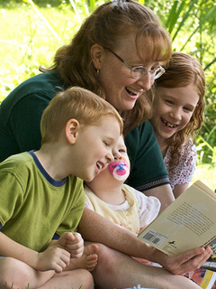

Who Else Wants Stress-Free Homeschooling?

The term home schooling can strike fear in the hearts of many mums and dads. The very idea of taking on such a huge responsibility sounds dauntless to say the least. However, when compared to the many other courageous things that mums and dads do for their kids throughout the year, it isn't really any more intimidating than say, giving birth! Parents are super heroes and home schooling can be just another of your super powers.
To continue reading Who Else Wants Stress-Free Homeschooling?, click here
Do You Make These Common Home Schooling Mistakes?
If you are one of the estimated 60,000 Australian parents who have decided to home school your children you've probably completed extensive research on the best teaching methods and the different types of curriculum available. But no matter how prepared you may be there are often mistakes made when beginning the day to day process of educating your children. The following are four common home schooling mistakes parents often make.
To continue reading Do You Make These Common Home Schooling Mistakes?, click here
Secrets to Homeschooling in NSW
If you are a mum who is considering homeschooling in NSW, here are some important things to remember, along with one secret.
It can be a difficult decision to choose whether or not to send your child to school or to educate them at home. While there are certainly advantages for doing each kind of schooling, there are many reasons mums in NSW choose to home school.
To continue reading Secrets to Homeschooling in NSW, click here
What Everybody Needs to Know About Homeschool Curriculum
nce you have made the decision to homeschool, choosing your homeschooling curriculum is the next big decision to make. Each homeschool curriculum is designed to meet different needs.
Your child has a particular way of learning and you have a desired way of teaching. The goal is to match your curriculum to meet each of your needs. For example, if your child is a visual learner, purchase a curriculum that includes pictures and photographs along with the written words.
To continue reading What Everybody Needs to Know About Homeschool Curriculum, click here